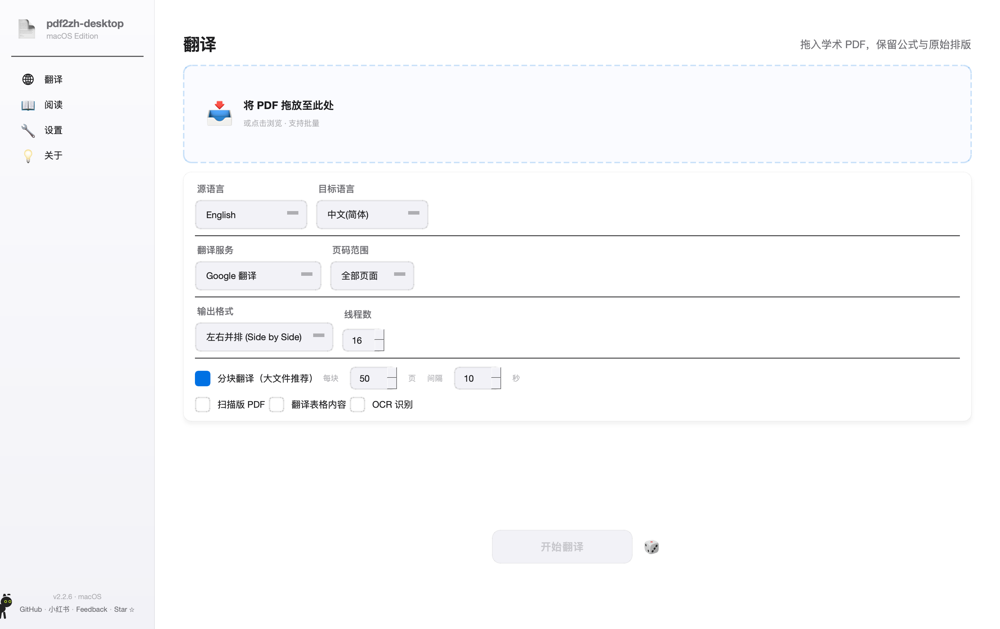
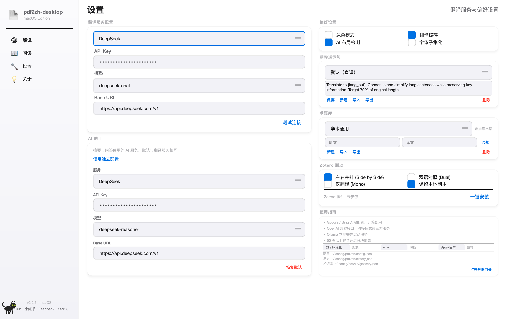
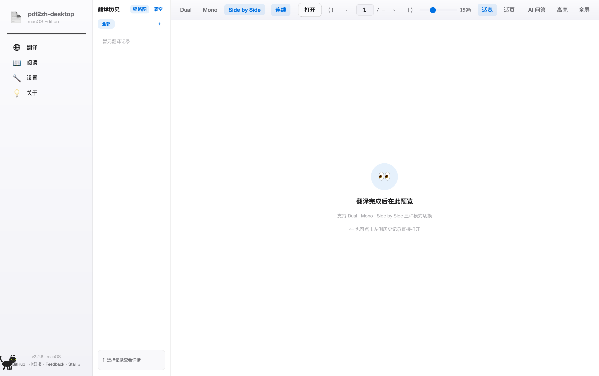
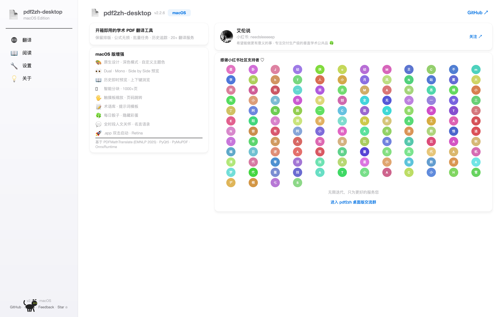

pdf2zh-desktop 是一款 macOS 学术 PDF 翻译工具，保留原始排版、公式、图表，支持多家翻译服务，自带阅读器与 AI 助手。本教程用真实截图带你走完每一步操作。
从 GitHub Release 下载 pdf2zh-desktop-mac-vx.x.x.zip，解压后把 pdf2zh-desktop.app 拖到「应用程序」即可。首次启动如果系统提示「无法验证开发者」，请去 系统设置 → 隐私与安全性 点「仍要打开」。
~/.cache/babeldoc。
xattr -cr /Applications/pdf2zh-desktop.app 解除隔离属性。
这是你日常用得最多的页面。把 PDF 拖到上方的虚线框，挑一个翻译服务，点最下面的「开始翻译」就行。所有选项都有合理默认，第一次用直接拖文件 + 点开始即可出结果。

四个 Tab：翻译 / 阅读 / 设置 / 关于。点「设置」配 API Key（首次必做），点「阅读」看历史译文。
把一个或多个 PDF 直接拖进来，也可以点击选择文件。支持批量：拖进 5 个文件就排队翻 5 个。
原文语言。一般保持 English。如果你翻日文/德文，下拉选对应语种 — 选错会导致句子拆分错乱。
翻成什么语种。默认 中文(简体)，可改繁中、日、韩、英、俄、法、德、意、葡、西、阿等 20+ 语言。
核心选项。Google 免费但慢且需翻墙；DeepSeek/通义千问/智谱用 API Key，质量好且便宜。→ 怎么选见下文
默认全部。也可填 1-10 只翻前 10 页，或 1,3,5-8 跳着翻。建议先小范围试翻验证服务可用。
三选一：左右并排（推荐 · 原文译文同页对照）/ 双语对照（先原文页后译文页）/ 仅译文（只输出中文版）。
同时跑多少个翻译请求。免费服务别开太大（容易封 IP），DeepSeek/通义建议 16-32，长文本翻得快。
大文件（>50 页）勾「分块翻译」，按 50 页一块，间隔 10 秒，避免触发 API 限流。扫描版 PDF 勾「扫描版 PDF」启用 OCR — 但效果有限，见下文。
点这里开跑。状态会变成「翻译中…」并显示进度条。完成后会自动跳到「阅读」页预览结果。骰子按钮：随便从内置示例论文里抽一篇试翻，验证流程。
Google 翻译（不需要 Key），点开始 — 30 秒后你就能看到中英对照的 PDF 了。然后再回头去配 DeepSeek 提升质量。所有翻译服务的 API Key 都填在这里。每个服务独立配置，互不影响。配好后翻译页才能选到对应服务。

下拉选你要配的服务。每选一个服务，下面的 Key/URL/Model 字段会切换。每个服务的配置独立保存。
从服务商后台复制粘贴。本地存储为 base64 + 文件权限 600，不上传任何服务器。失焦自动保存（点别处或按回车）。
下拉选具体模型。DeepSeek 推荐 deepseek-chat（便宜快），deepseek-reasoner 准但慢且贵。OpenAI 用 gpt-4o-mini。
API 端点。一般保持默认，除非你用三方代理（Cloudflare AI Gateway / OpenRouter / 自建中转）。
点一下让程序发一个最小翻译请求验证 Key 有效。失败时会弹错误信息（额度不足 / Key 无效 / 网络超时）。
阅读页右侧的「AI 问答」用的服务。可以和翻译服务用同一家（默认勾上「使用独立配置」就关闭，沿用翻译服务）。也可以让翻译用便宜的，AI 助手用更聪明的。
四个开关：深色模式（界面跟随）/ 翻译缓存（建议开 · 同一段重复翻只调一次 API）/ AI 布局检测（实验性，开了会更准但更慢）/ 字体子集化（开了输出 PDF 更小）。
给 AI 的指令模板。默认「直译」，你可以改成「学术」「口语」「保留专业术语」等风格，支持多套预设，点「保存 / 新建 / 导入 / 导出」管理。改完点「保存」生效。
固定专业名词的翻法。比如 Transformer → Transformer（不译）、token → 词元。每个学科一份术语表，翻译前选对的一份。
把翻译好的 PDF 自动导入 Zotero 文献库。点「一键安装」装 Zotero 插件，配好后翻译完成会问你「是否导入 Zotero」。
跳转到 ~/.config/pdf2zh/。出问题时把 config.json 和 history.json 截图发给我们排查。不要手动改这两个文件，App 会覆盖。
翻译完成后会自动跳到这一页。左侧是历史记录，中间是 PDF 预览，右侧（点开后）是 AI 助手。关键功能：双语切换、AI 划词问答、跨译文高亮笔记。

左栏顶部。点「缩略图」切换列表/缩略图视图，点「清空」删除全部历史（不可逆，会问确认）。下方「全部 / 自建标签」按学科/项目分类。
每翻译一份 PDF 自动添加一条。点击一条 = 直接打开该译文的 Side by Side 视图。右键可重命名、删除、移到分组。
双语对照模式：先一页原文，再一页译文，交替展示。适合精读 / 反复对照术语。
仅译文模式：只显示中文版。适合快速浏览全文掌握大意。
左右并排（默认）：左原文右译文，滚动同步。最常用，推荐。
滚动行为切换。「连续」=网页式无限滚动，「单页」=一次显示一页（按 → 翻页）。
「打开」按钮：手动选别的 PDF。右边的 « < 1/N > » 是首页/上页/页码/下页/末页。
拖滑块调缩放比例（25%-300%），右边显示当前百分比。Cmd+滚轮也能缩放。
「适宽」让 PDF 宽度撑满，竖向滚动；「适页」整页显示，左右居中。看公式多的论文用「适宽」。
AI 问答：右侧抽屉，划词问 AI 解释。高亮：选中文字加荧光笔，跨语言同步（高亮原文，译文版同位置自动高亮）。全屏：F 键切换沉浸阅读。
预览区空时的提示。点左侧任一历史记录或翻译完成后自动加载，这块就会变成 PDF 预览。
查看版本号、特性列表、跳转到 GitHub、加 QQ 群、看小红书支持者墙。出 bug 也从这里走。

左上角是当前版本号（v2.2.6）。下面是简短描述：「开箱即用的学术 PDF 翻译工具」。
列出本版本的核心能力：原生设计、深色模式、Dual/Mono/Side by Side、历史管理、智能分块、触摸板手势、术语表、AI 问答、Zotero 联动等。
「艾伦说」是项目作者的小红书号。发布更新预告、使用技巧、用户案例。点「关注」直接跳到主页。
跳转到 仓库主页。看 Release 页下载新版、看 Issue 报 bug、看 Star 涨了多少。
感谢所有在小红书互动 / Star / 反馈 bug 的朋友。每个圆圈代表一位用户（昵称首字母）。
桌面交流群。这是最快得到帮助的地方 — 翻译异常、API 问题、功能建议丢群里，群主和老用户会回答。
翻译需要调外部 AI 服务。每家服务都要去对应官网注册账号 → 充值 → 创建 API Key → 粘贴到设置页。下面按「场景」推荐，照着选不会错。
国产大模型 · 学术翻译质量第一档 · 千 token ¥0.001（输入），¥0.002（输出） · 注册送 ¥10 额度可翻 200 篇论文 · 模型选 deepseek-chat。
阿里云出品 · 稳定速度快 · 千 token ¥0.0008-0.012（按模型档位）· 注册送大量免费额度 · 推荐模型 qwen-plus / qwen-max。
Gemini 1.5 Flash 免费档每分钟 15 请求 · 长文本能力强（2M token 窗口）· 国内需翻墙 · 用 Google 账号即可申请 Key。
国内 LLM 聚合中转 · 一个 Key 调 20+ 模型（DeepSeek/Qwen/Yi/Llama）· 价格对齐源厂 · 注册送 ¥14 体验金。
如果你的 PDF 是扫描件（图片型，选不了文字、复制不出来），翻译页的「OCR 识别」勾选框只能做非常基础的文字识别，对复杂版面、公式、表格、多栏论文识别率低。强烈建议先用专业 OCR 软件给 PDF 加一层文字层，再回到 pdf2zh 翻译，效果天差地别。
Acrobat Pro DC 自带 OCR · 「工具 → 增强扫描」一键加文字层 · ¥130/月订阅 · 已有 Adobe 全家桶的人首选。
App Store 搜「白描」· ¥38 买断 · 中文 OCR 准 · 拖入 PDF 一键识别导出可搜索 PDF · 小批量论文足够。
Tesseract 内核 · 命令行 · brew install ocrmypdf 然后 ocrmypdf in.pdf out.pdf · 中文加 -l chi_sim+eng。
通常是 API Key 没配 / 配错。回设置页点「测试连接」验证。免费 Google 翻译需要稳定翻墙环境。
翻译页勾「分块翻译」，每块 50 页，间隔 10 秒。或线程数从 16 调到 4-8。免费服务尤其需要。
v2.2.5+ 已修复 MS-Mincho 误判 / DeepSeek 注释抑制。如果仍异常，关掉「AI 布局检测」试试。
删掉 ~/.cache/babeldoc，再重新打开（会重新下载字体）。还不行去 GitHub Issue 贴日志：~/Library/Logs/pdf2zh-desktop/。
服务从 Google 切到 DeepSeek/通义千问，质量提升明显。设置页加术语表，固定专业名词译法。
能。翻译页改「源语言」为对应语种。模型默认都支持 50+ 语言互译。
能。翻译页改「目标语言」即可。中→英、英→日都很常见。
阅读页左栏 = 历史。原始数据：~/.config/pdf2zh/history.json。备份这个文件即可。
本地存 base64 + 文件权限 600，不上传服务器。如果担心源码可在 GitHub 仓库审计 config_manager.py。